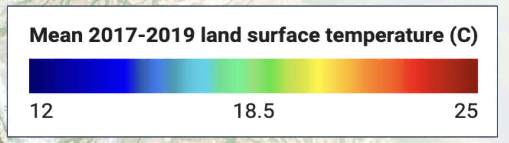
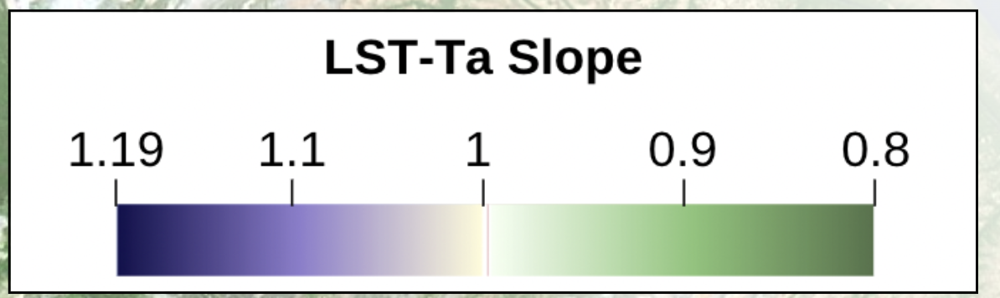

MODIS and ASOS Satellite Data
The basemap is the Land Surface Temperature (LST) from the years 2017-2019. Cooler temperatures are represented by blue and hotter temperatures are represented by red:
The slope legend below shows the LST-Ta relationship. Lower slopes are dark green and as slope increases, the legend color turns into a lighter green and as the slope increases, the symbol turns purple.
In the ASOS stations, which are represented by circles, lower slopes tend to have a mid-range LST, which is green.
In the NYC area, which are represented by squares, lower slopes tend to have a higher LST; higher slopes tend to be in locations with a cooler LST.
LST-Ta Slope Map
There are over 200 ASOS Stations around the world!The slope map below shows the relationship between LST and Ta. You can type in the search bar in the map below to find a specific station/location's LST-Ta relationship.